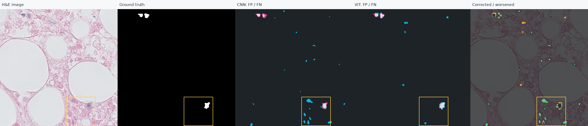
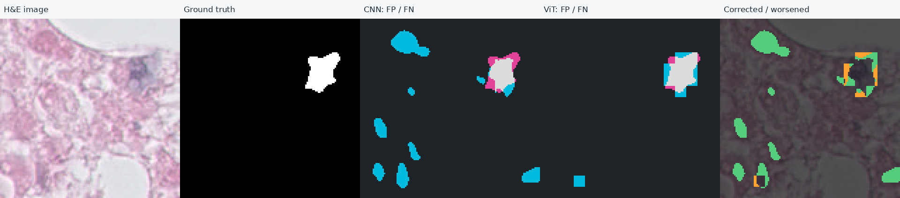
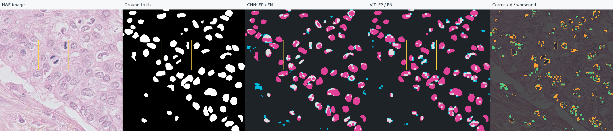
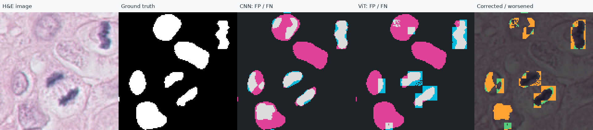

실행 출처: user-codespaces · seed 20261113 · 검증 10장 / 2개 그룹
저장된 확률과 정답으로 다시 계산한 결과입니다. 이 보고서는 모델을 다시 실행하지 않았습니다. 전체·경계·내부 수치는 원본 JSON에서 확인할 수 있습니다.
Dice는 높을수록 좋습니다. Δ는 ViT − CNN이며 이미지 전체 점수입니다. 검증 데이터에서 epoch·threshold를 선택했으므로 독립적인 성능 검증으로 해석하지 않습니다.
| 이미지 | CNN Dice | ViT Dice | Δ | 교정 px | 악화 px |
|---|---|---|---|---|---|
| 08_1 | 0.636411 | 0.681085 | +0.044673 | 18874 | 9386 |
| 08_2 | 0.582040 | 0.673421 | +0.091381 | 50474 | 14612 |
| 08_3 | 0.528799 | 0.607406 | +0.078607 | 59951 | 15703 |
| 08_4 | 0.433865 | 0.583037 | +0.149172 | 81708 | 11215 |
| 09_1 | 0.402373 | 0.344220 | -0.058153 | 5664 | 7278 |
| 09_2 | 0.416992 | 0.422238 | +0.005246 | 19411 | 9168 |
| 09_3 | 0.511776 | 0.527342 | +0.015566 | 10040 | 8182 |
| 09_4 | 0.633186 | 0.607646 | -0.025540 | 5339 | 6512 |
| 09_5 | 0.526927 | 0.478979 | -0.047948 | 10188 | 7995 |
| 09_6 | 0.365310 | 0.651067 | +0.285758 | 1521 | 578 |
오류 지도: 청록 = FP (정답에는 없는 예측), 분홍 = FN (놓친 정답), 회색 = 일치한 전경. 변화 지도: 초록 = 교정, 주황 = 악화. 모두 픽셀 수이며 핵 개수가 아닙니다.
공통 확대 위치 xyxy: [288, 384, 416, 512] (끝 좌표 제외). 선택 영역 Dice 0.3673 → 0.7484; 교정 904px / 악화 158px.

노란 상자의 동일 영역 확대 — 최근접 보간 표시, 집계는 원본 픽셀 기준

공통 확대 위치 xyxy: [160, 128, 288, 256] (끝 좌표 제외). 선택 영역 Dice 0.5875 → 0.3907; 교정 210px / 악화 1068px.

노란 상자의 동일 영역 확대 — 최근접 보간 표시, 집계는 원본 픽셀 기준

점수 차이가 FP 감소인지 FN 감소인지 먼저 확인하세요. 핵의 크기·밀집·염색 차이는 영상에서 관찰하고 별도로 검증할 가설입니다. 이 그림만으로 실패 원인을 확정하거나 개선된 핵의 개수를 주장하지 않습니다.
이미지: TNBC v1.1, CC-BY-4.0, DOI 10.5281/zenodo.2579118. 연구·교육용.